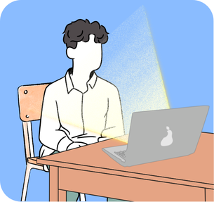
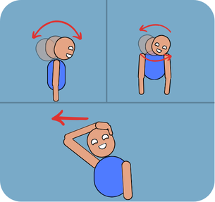
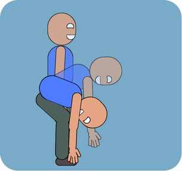

Você sabia?
O trabalho prolongado no computador pode causar problemas como fadiga ocular e mental, ou até dores musculares e tendinites, especialmente quando não adotamos hábitos saudáveis, um exemplo é, manter contato visual com a tela do computador por mais de duas horas.
Dores oculares
Como dito anteriormente, manter o contato visual com a tela do computador por mais de duas horas pode ocasionar o cansaço ocular, fazendo com que seus olhos fiquem irritados e até mesmo com dificuldade de foco. Para evitar que isso aconteça, é recomendado que dentre deste período de uso da tela, sejam realizadas pausas de 10 à 15 minutos para o descanço ocular.
Espera, você não sabe como pode fazer isso?
É simples! Basta observar objetos que estejam a mais de 6 metros de distância durante as pausas, um exemplo seria observar pela janela os prédios, pássaros, entre outros.
Dores musculares
Há outros maleficios que são ocasionados se você não colocar em prática uma boa postura e os devidos intervalos durante sua jornada, dentre eles temos as dores musculares que são causadas quando não mantemos uma postura correta durante o trabalho. Para evitar este desconforto deve manter em seu dia a dia o costume de realizar alongamentos durante suas pausas e ficar sempre atento à sua postura enquanto sentado.
Abaixo temos dicas de alongamentos e instruções de postura:
Tendinites
Você sabe o que são as tendinites? Nada mais são do que a inflamação ou irritação de um tendão, ou seja, envolve nossas partes do corpo que são capazes de "dobrar", como joelhos, dedos, pulsos, entre outros. Quando a tendinite se desenvolve pode ocasionar dores fortes ao realizar uma ação que estamos acostumados.
O que causa a tendinite?
Movimentos repetitivos seria a reposta mais rápida. Para quem trabalha em escritório, onde há a necessidade de utilização de teclado e mouse, tem grande chance de acabar sentindo dores no pulso ao realizar o movimento do mesmo, isso se não tiver bons hábitos durante a jornada de trabalho.
Cansaço mental
Muitas vezes ignorado, o cansaço mental pode trazer muitos problemas não apenas no seu espaço de trabalho como também pessoais, isso por conta de que ele ocasiona falta de atenção, desinteresse, estresse repentino, insônia, entre outros sintomas.
Está bem, mas o que a Ergonomia tem haver com isto?
A ergonomia no espaço de trabalho não se trata apenas de questões físicas, os alongamentos e pausas que realizar durante seu dia ajudam a melhorar seu humor, te auxiliando a desfocar de algo que pode estar repetitivo e focar em seu corpo e sua saúde.
Dicas e instruções
Vamos começar com a questão das pausas, evite passar mais de 2 horas seguidas sentado em frente ao computador, tente realizar pausas de 10 - 15 minutos durante essa jornada, você pode adicionar lembretes para os seus alongamentos e, consuma água pois a hidratação é muito importante para seu corpo.
Para os exercicios, você pode seguir a rotina conforme abaixo.
Punhos:
Estique um dos braços para frente e puxe o dorso da mão no sentido do antebraço. Em seguida, puxe a palma da mão em direção ao antebraço. Repita os dois movimentos com o outro braço.

Ombros:
1 - Eleve um dos braços na lateral da cabeça e segure-o na região do cotovelo. Repita o exercício com o outro membro.
2 - Cruze a frente do tórax com um dos braços e pressione o cotovelo junto ao peito. Repita o movimento com o outro braço.
3 - Estique o braço para frente e apóie a palma de uma das mãos na parede. Gire o tronco para o lado oposto. Mantenha-se nessa posição até sentir o ombro alongado.
4 - Depois, faça uma rotação simultânea nos dois ombros nos dois sentidos.
Coluna cervical:
Alongue o pescoço para frente, para trás e para os lados. Faça uma rotação completa do pescoço sobre os ombros de forma lenta e o mais acentuado possível, num sentido e depois no outro.
Região lombar:
Separe as duas pernas, flexione levemente os joelhos e solte o corpo para frente. Relaxe os ombros, procurando chegar com as mãos o mais próximo possível do chão. Volte à posição inicial endireitando o corpo, vértebra por vértebra.
Autor: Kevin de Souza Gomes
GitHub: Kevinsg1997
LinkeDin: ksg1997
Agradecimento à Fiocruz (Fundação Oswaldo Cruz) por disponibilizar instruções válidas sobre os cuidados mencionados acima. Link da página onde as instruções foram baseadas:
https://www.fiocruz.br/biosseguranca/Bis/lab_virtual/exercicios_de_loangamento_e_relaxamento.html